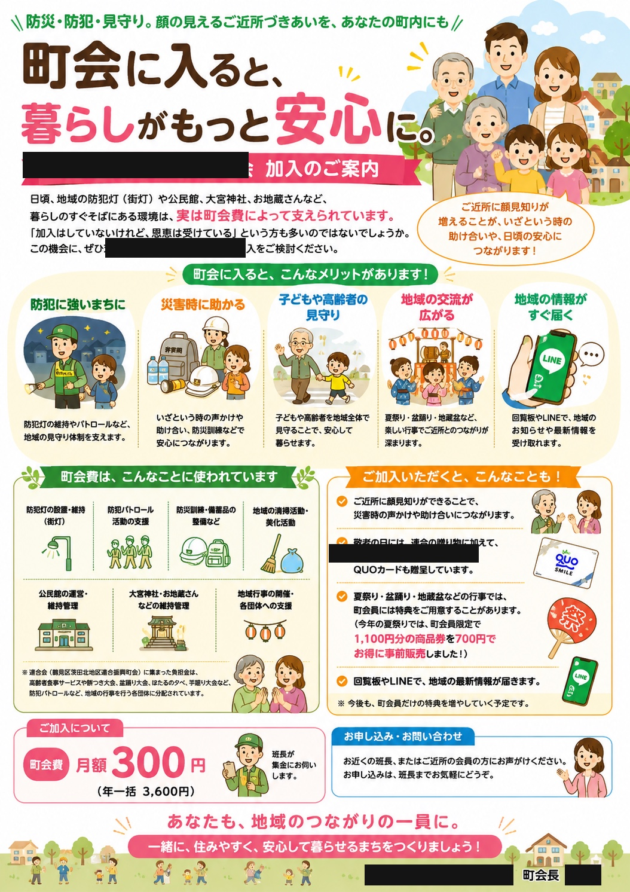

町会長1年目のリアルな日常をお届けします。
お盆と重なるうえ、回覧板を回さず掲示板だけで告知したところ、締め切りを過ぎても貼られていない地域がありました。届いていなかった、という話です。

町会に入るとどんなメリットがあるのか、何にお金が使われているのかを、AIの力を借りてひと目でわかる図解チラシにしてみました。
30分の引き継ぎでは伝わらないと気づいたので、今日は現場で新任の方に地蔵会計の仕事をひとつずつ説明。実際に見てもらいながらの引き継ぎです。
前任の会計の方とサポートしてくれる方と引き継ぎ内容を確認。仕事自体は簡単なのに、なぜ伝わらないのか。従来の30分の引き継ぎ時間そのものが問題では、と気づきました。
班長グループLINEで地蔵盆の事前準備をお願いしましたが反応なし。でも盆踊りの氷のお願いも事前は反応ゼロで当日10人来てくれた経験から、今回も当日を信じることにしました。
今年の地蔵盆は1日3時間に絞ることが決まりました。ただ引き継ぎが伝わっておらず、結局その分まで自分が抱えることに。町内会の押し付けの実態も正直に書きます。
おにぎり・ドリンク・ゼリーつかみ取りの3枚をAIに作ってもらいました。先に形だけ見せてもらい、大きさなどを何回も直してもらった記録です。
雨の中を設営して一旦帰宅、再集合したらテントが崩れていました。雨水の流れまで考えが及ばなかった、苦い反省です。それでもほたるは光った。
過去の担当表を読み込んだら、7月〜9月まで膨大な作業量に圧倒されました。これは1人では絶対無理。サブ担当を決めて進めないといけない。
毎週日曜の朝に神社清掃をする予定ですが、2週連続で雨。月曜の早朝に子どもたちと一緒にリベンジしました。途中から班長さんも参加してくれて助かりました。
町会の班の数を見直そうと考えています。世帯数の偏りをならすため、12班から10班への再編を検討中。簡単ではありませんが、みんなが続けやすい形を目指します。
LINEオープンチャットの登録者が約50人になりました。加入は約200世帯。まずは150人を目標に、無理なく少しずつ広げていきたいと思います。
隣の町会の班町会議に参加してきました。公民館の共同運営や会計の引き継ぎなど、これまで不透明だった部分が見えてきました。夏祭りも共同で出店することになりました。
小学3年生向けの防災特別授業を開催。新聞紙で作る防災グッズに挑戦しました。20人ほどの子どもたちが参加し、班長さんの協力もあって時間ぴったりで終えることができました。
紙の会員証とデジタル会員証、両方を一から作り直しました。デザイン・印刷データの作成から、スマホで使えるデジタル版の開発まで、その記録をまとめました。
5月30日の小学3年生向け防災授業に向けて、新聞紙でスリッパ・食器・コップを作る折り方を練習。能登地震でも活躍した知恵を、子どもたちに伝えられるよう準備しました。